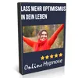

Starke Kinder stärken
Produktprofil · Marktplatz-Daten 2026-10-13 · Verkaufsseiten-Recherche 2026-10-13 · Kategorien: Health & Fitness, Family & Children
- Starke Kinder stärken ist ein/e Download in Health & Fitness und Family & Children, vertrieben über den Digistore24-Marktplatz von Anbieter Mamipassion_Kerstin, gelistet seit 2025-02-21.
- Listenpreis $32.42; Digistore24 meldet — Checkout-Konversion, — Stornierungsquote und 30 % Affiliate-Provision.
- Verdienst pro Verkauf (Affiliate): $9.73 (Anbieter-seitige Statistik, keine Prognose).
Interesse an Starke Kinder stärken? Aktueller Preis, Boni und Garantiebedingungen finden Sie auf der offiziellen Seite des Anbieters:
Offizielle Verkaufsseite ansehen
Affiliate-Link (Werbung) — wir verdienen ggf. eine Provision, ohne Mehrkosten für Sie.

Marktplatz-Daten
| Produkttyp | Download |
|---|---|
| Preis | $32.42 (Single payment) |
| Affiliate-Provision | 30 % |
| Garantie/Rückgabe | Laut Verkaufsseite des Anbieters — vor dem Kauf auf der offiziellen Seite prüfen |
| Anbieter | Mamipassion_Kerstin (gelistet seit 2025-02-21) |
| Marktplatz-Statistiken* | Checkout-Konversion — · Stornoquote — · Verdienst/Verkauf $9.73 |
* Anbieter-seitige Statistiken von Digistore24; sie hängen von der Traffic-Qualität ab und sind keine Prognose.
Marktplatz-Beschreibung des Anbieters
Produktbeschreibung: „Starke Kinder stärken“ ist ein liebevoll gestaltetes Digital-Bundle für Eltern, Pädagog:innen und Familien, die Kinder dabei unterstützen möchten, besser mit Stress, Sorgen und innerer Unruhe umzugehen. Das Bundle besteht aus: Einem kindgerecht formulierten Ebook mit praxisnahen Tipps und einfachen Entspannungstechniken für Kinder (inkl. Elternanteil) Einer geführten Audio-Entspannungsreise („Reise in den Zauberwald“) zur Förderung von innerer Ruhe, Vertrauen und mentaler Stärke Zielgruppe: Eltern mit Kindern im Alter von ca. 4 bis 10 Jahren Familien mit sensiblen, ängstlichen oder emotional schnell überforderten Kindern Pädagog:innen, Erzieher:innen, Lehrer:innen, Familienberater:innen Alle, die kindliche Achtsamkeit & Selbstregulation fördern möchten Warum dieses Produkt leicht zu verkaufen ist: Große Nachfrage: mentale Gesundheit & emotionale Entwicklung von Kindern sind hochrelevante Themen Perfektes Timing: viele Kinder erleben Stress, Überforderung oder Ängste – Eltern suchen nach Hilfe Kompakt & direkt umsetzbar: keine langen Kurse – sofortige Unterstützung im Alltag Emotionales Storytelling: besonders die Zauberwald-Audio spricht die Herzen an Ideal für den digitalen Vertrieb: Downloadprodukt – sofort verfügbar, kein Versand Preis & Provision: Verkaufspreis: 29 € (Empfohlene Aktion: Rabattcode „KINDER20“ – Einführungspreis mit Code: 23,20€ ) Attraktive Provision für Affiliates Stornoquote voraussichtlich gering: da sehr zielgerichtet & klarer Nutzen Bewerbungsmöglichkeiten für Affiliates: Instagram / Facebook / Pinterest (z. B. Eltern-Content, Mental Load, Achtsamkeit mit Kindern) Mama-Blogs, Familien-Newsletter, Lehrer:innen-Plattformen Podcast-Platzierungen zum Thema „Kinder stärken / Gefühle verstehen / Resilienz“ Kooperation mit Coaches, die Eltern begleiten Support für dich als Affiliate: Rabattcodes zur Verkaufssteigerung Persönlicher Affiliate-Support & Kooperation auf Augenhöhe Social Madiea Material und Posting-Ideen Affiliates | MamiPassion Jetzt Partner:in werden und Familien dabei unterstützen, mehr Ruhe, Stärke und emotionale Verbindung in den Alltag zu bringen – mit einem Produkt, das wirkt, berührt und langfristig unterstützt.
Von der Verkaufsseite des Anbieters
Seitentitel: Starke Kinder stärken - Digistore24
Abschnitts-Überschriften
- Starke Kinder stärken
- Starke Kinder stärken
- Starke Kinder stärken
Einstiegstext
Starke Kinder stärken Für mehr Ruhe, Selbstvertrauen und emotionale Stärke im Familienalltag
Wünschst du dir, dass dein Kind gelassener mit Herausforderungen umgeht, besser zur Ruhe findet und mit mehr Selbstvertrauen durchs Leben geht?
Viele Kinder erleben heute einen Alltag voller Reize, Termine und Erwartungen. Sie spüren Stress, Sorgen oder Unsicherheiten oft intensiver, als wir Erwachsenen vermuten. Gleichzeitig wünschen wir uns als Eltern nichts mehr, als unser Kind liebevoll zu begleiten und ihm die Sicherheit zu geben, die es braucht.
Mit leicht umsetzbaren Übungen, einer entspannenden Fantasiereise und wertvollen Impulsen stärkst du dein Kind spielerisch – und schaffst gleichzeitig kleine Ruheinseln für eure ganze Familie.
Preisangaben auf der Seite: $10
Recherche-Methode: rohes HTML · 490 Wörter · Qualität: rich · recherchiert am 2026-10-13. Vollständige Recherche-Datei (MD) ↗
Wie Produkte dieser Art geliefert werden
Allgemeiner Hinweis zu diesem Produkttyp (keine anbieterspezifische Anleitung): Download-Produkte werden digital geliefert: sofort nach dem Checkout erhalten Sie Downloadlinks (oder Zugang zu einem Mitgliederbereich) — kein physischer Versand. Für die genaue Anwendung von Starke Kinder stärken sind die offizielle Verkaufsseite und die enthaltenen Materialien maßgeblich.
Gut zu wissen
- Keine Garantie-Formulierung in unserer Recherche gefunden — bestätigen Sie das Rückgabefenster auf der offiziellen Seite, bevor Sie kaufen.
- Marktplatz-Zahlen (Preis, Provision, Konversion, Stornoquote) — Quelle: offizielle Digistore24-Marktplatz-API (Affiliate-Sicht), Stand 2026-10-13. Gegenprüfung: Marktplatz-Suche nach Produkt-ID 597672.
- Verkaufsseiten-Zitate — Quelle: https://www.checkout-ds24.com/product/597672, abgerufen 2026-10-13 (Methode: rohes HTML). Verify: offizielle Seite öffnen.
- Garantie / Rückgabe — vom Anbieter festgelegt; vor dem Kauf auf der Verkaufsseite bestätigen.
- Nicht von uns geprüft: Produktqualität, Ergebnisse, Testimonials — kein Praxistest für dieses Listing durchgeführt.
Häufige Fragen zu Starke Kinder stärken
Antworten aus dem Marktplatz-Snapshot (2026-10-13) und der Verkaufsseiten-Recherche (2026-10-13); Anbieteraussagen sind inline gekennzeichnet.
Was ist Starke Kinder stärken?
Starke Kinder stärken ist ein Angebot des Typs „Download" im Digistore24-Marktplatz, Anbieter: Mamipassion_Kerstin, gelistet seit 2025-02-21. Eingepflegt unter Gesundheit & Fitness und Familie & Kinder. Digistore24 wickelt Checkout, Lieferung und Rückgaben ab.
Wie viel kostet Starke Kinder stärken?
Der Digistore24-Marktplatz listet es für $32.42 (single payment). Preise legt der Anbieter fest und können sich ändern — der Marktplatz-Eintrag oben zeigt den Schnappschuss; die offizielle Verkaufsseite zeigt den aktuellen Preis.
Gibt es eine Geld-zurück-Garantie für Starke Kinder stärken?
Unsere Verkaufsseiten-Recherche hat keine explizite Garantie-Formulierung gefunden. Viele Digistore24-Produkte bieten 60 Tage Geld-zurück, aber das legt jeder Anbieter selbst fest — bestätigen Sie es auf der offiziellen Verkaufsseite, bevor Sie kaufen.
Ist Starke Kinder stärken seriös?
Wir bewerten keine Seriosität — wir veröffentlichen überprüfbare Zahlen: Anbieter Mamipassion_Kerstin (gelistet seit 2025-02-21), Checkout-Konversion —, Stornoquote —, Affiliate-Verdienst/Verkauf $9.73 (alles Anbieter-seitige Marktplatz-Statistiken). Lesen Sie unsere 6-Punkte-Bewertungsmethode und entscheiden Sie anhand der Zahlen — oder diskutieren Sie Starke Kinder stärken auf GitHub.
Wo kann ich Starke Kinder stärken sicher kaufen?
Nur über die offizielle Verkaufsseite, die auf dieser Seite verlinkt ist (Checkout und Rückgaben laufen über Digistore24). Prüfen Sie dort Preis und Garantie vor der Bestellung. Der Link ist ein Affiliate-Link — der Kauf unterstützt diese Website ohne Mehrkosten für Sie.
Wie erhalte ich Starke Kinder stärken nach der Zahlung?
Der Checkout läuft über Digistore24: Nach der Zahlung erhalten Sie Ihren Zugang oder Download per E-Mail und in Ihrem Digistore24-Kundenkonto. Lieferdetails für diesen Produkttyp: Download-Produkte werden digital geliefert: sofort nach dem Checkout erhalten Sie Downloadlinks (oder Zugang zu einem Mitgliederbereich) — kein physischer Versand. Bei Problemen kann der Digistore24-Käufersupport Ihre Bestellung wiederherstellen.
Alle 50 Käuferfragen zu Gesundheit & Fitness — das komplette Kategorie-FAQ.
Starke Kinder stärken auf Reddit diskutieren
In Community-Threads vergleichen echte Käufer Erfahrungen. Wir verlinken Communities, keine einzelnen Posts — Threads verschwinden, Subreddits bleiben:
- r/FITNESS — deutschsprachige Community mit Diskussionen zu health & fitness.
- Reddit-Suche nach „Starke Kinder stärken" — Live-Ergebnisse, von uns nicht beeinflusst.
- Top-„Erfahrungs"-Treffer dieses Jahr — selbst nach Aktualität filtern.
Passendes auf Amazon.de
Physische Produkte und Zubehör, die häufig zusammen mit Starke Kinder stärken gekauft werden:
- Nahrungsergänzung auf Amazon.de — Top-Ergebnisse, Amazon-Ranking.
- Bestseller: Nahrungsergänzung — live Liste von Amazon, von uns nicht kuratiert.
Werbung: Als Amazon-Partner verdient DigistorePicks DE an qualifizierten Käufen (Partner-tag adminstorede-21). Amazon setzt eigene Preise und Provisionen (niedrige einstellige Prozente — weit unter den 30–75% der Digistore24-Anbieter). Amazon ist ein Convenience-Angebot für Sachprodukte, kein Ersatz für das digitale Produkt oben.
Ähnliche Angebote in Gesundheit & Fitness

Eine vollständig strukturierte, medizinisch fundierte Online-Ausbildung zur Vorbereitung auf die Heilpraktikerprüfung – mit klarem Curriculum, systematischem Au

Online Ausbildung zum Holistic Skin & Health Expert, staatlich Zugelassen mit Abschlusszertifikat ( 6 Monate) Werde zertifizierter Holistic Skin & Healt

1:1 Online Training per Video Mentale Klarheit auf Knopfdruck – mitten im echten Leben. Stell dir vor, du könntest deinen Fokus, deine Gelassenheit und deine Wa

bis zu 10% Provision | 600.000€ Umsatzpotenzial für 2026 Marktplatz-Beschreibung Sichern Sie sich Ihren Anteil am Erfolg: Wir suchen exklusive Partner für ein 6
Starke Kinder stärken ist auch gelistet in
Familie & Kinder (268 Produkte)
Ähnliche Preislage in Gesundheit & Fitness

Verstehe dein inneres Kind ist ein psychologischer Minikurs, der den Teilnehmern beibringt: welche Kindheitsprägungen es gibt wie diese in der Kindheit entstehe

Das Mach dich schlank Programm über VSL Natürlich, gesund und nachhaltig abnehmen, das ist unser Mach dich schlank Programm. Hierbei werden die Basics einer ges
Hypnose Kurs: "Selbstheilungskräfte stärken" 1,5 Stunden On-demand Videos für: Immunsystem verbessern Gefühle kontrollieren Förderung der Selbstheilun

Hypnose Kurs: "Lass mehr Optimismus in Dein Leben" 1,5 Stunden On-demand Videos für: Mehr Optimismus Gute Gefühle Positives Denken Selbstkontrolle Kur
Ähnliche Suchanfragen
Wo Sie es sich ansehen können
Wo Sie es sich ansehen können
Aktuelle Preise, Garantie und Boni finden Sie auf der offiziellen Verkaufsseite:
Offizielle Verkaufsseite ansehen
Das ist ein Affiliate-Link (Werbung) — kaufen Sie darüber, verdienen wir ggf. eine Provision, ohne Mehrkosten für Sie.
Quellen & weiterführende Informationen
- Offizielle Verkaufsseite (aktueller Preis, Garantie, Boni): www.checkout-ds24.com/product/597672 (Affiliate-Link)
- Öffentliche Digistore24-Produktseite: checkout-ds24.com/product/597672
- Vollständige Recherche-Datei (Markdown, versioniert): content/products/51419-starke-kinder-st-rken.md
- Marktplatz-Kategorie: Gesundheit & Fitness
Wie wir Produkte wie Starke Kinder stärken bewerten
Sechs Prüfungen, ausschließlich mit offiziellen Marktplatz-Zahlen. Die vollständige Bewertungsmethode lesen · unsere Recherche-Standards & Kennzeichnung.
Fragen oder eigene Erfahrungen mit Starke Kinder stärken?
Praxis-Tests veröffentlichen wir erst, nachdem wir ein Produkt selbst gekauft haben — aber Ihre Erfahrung hilft anderen Lesern: Diskussion zu Starke Kinder stärken auf GitHub starten/verfolgen. Falsche Zahl gefunden? Korrektur melden — jede Seite zeigt ihre Datenstände, Korrekturen gelten für die ganze Website.